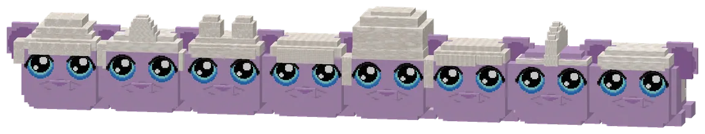
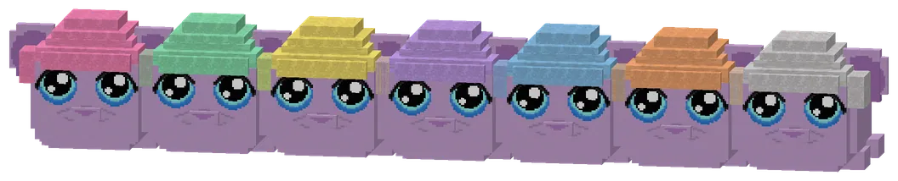
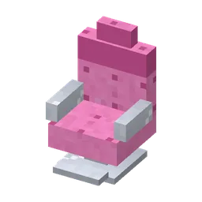
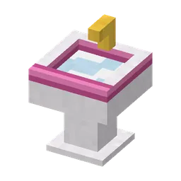

Cut, curl and blow-dry guhs with Kapper Krulletje in Knip & Vads.
Knip, krul en föhn guhs bij Kapper Krulletje in Knip & Vads.
Knip & Vads, the hairdresserKnip & Vads, de kapper
Kapper Krulletje knips, curls and blow-dries every guh VAHOEG pretty: "A guh is never too vads for a new hairstyle, only not vahoeg enough." His minigame is the kappersshow: give the customer the hairstyle on his picture, in time (with the loaned kappersschaar), for krulmunten and a highscore. Guhs now have a sixth clothes slot: hair. There are 8 hairstyles (krullen, kuifje, knotjes, strikjes, pluisbol, vlechtjes, hanenkam, matje) and 8 hair dyes (roze, mint, citroen, lavendel, hemelsblauw, perzik, zilver and regenboog). Use them on your own tamed guh: hair is permanent (only the kapper changes it) and fits under every hat. Collect them all for the kapselcollectie.
Kapper Krulletje knipt, krult en föhnt elke guh VAHOEG mooi: "Een guh is nooit te vads voor een nieuw kapsel, alleen niet vahoeg genoeg." Zijn minigame is de kappersshow: geef de klant op tijd het kapsel van zijn plaatje (met de geleende kappersschaar), voor krulmunten en een highscore. Guhs hebben nu een zesde kledingvakje: haar. Er zijn 8 kapsels (krullen, kuifje, knotjes, strikjes, pluisbol, vlechtjes, hanenkam, matje) en 8 haarverfjes (roze, mint, citroen, lavendel, hemelsblauw, perzik, zilver en regenboog). Gebruik ze op je eigen tamme guh: haar is blijvend (alleen de kapper verandert het) en past onder elk hoedje. Verzamel ze allemaal voor de kapselcollectie.

The eight hairstylesDe acht kapsels
Krullen, kuifje, knotjes, strikjes, pluisbol, vlechtjes, hanenkam and matje, in the natural colour.
Krullen, kuifje, knotjes, strikjes, pluisbol, vlechtjes, hanenkam en matje, in de natuurlijke kleur.

Hair dyesHaarverf
The krullen in seven of the dyes (regenboog changes colour). A dye: a glass bottle, a dye and a kaasknabbel.
De krullen in zeven van de verfjes (regenboog verandert van kleur). Een verfje: een glazen flesje, een kleurstof en een kaasknabbel.




Prizes: clothesPrijzen: kleding
 Kapperscape 10 krulmunten
Kapperscape 10 krulmunten
Highscores in the GuhdexHighscores in de Guhdex
- Kappersshow